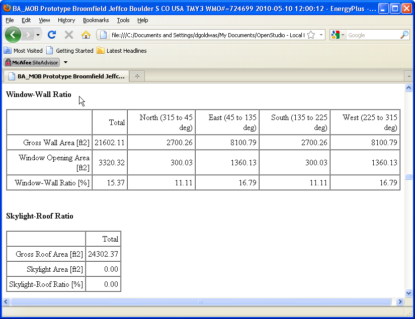
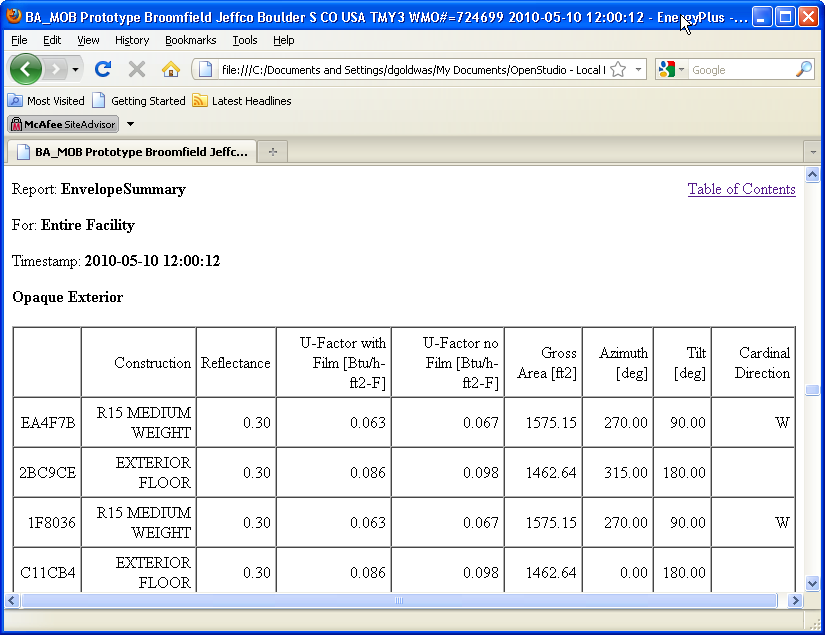
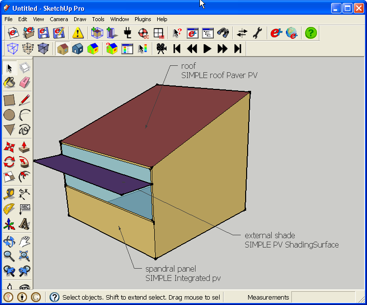
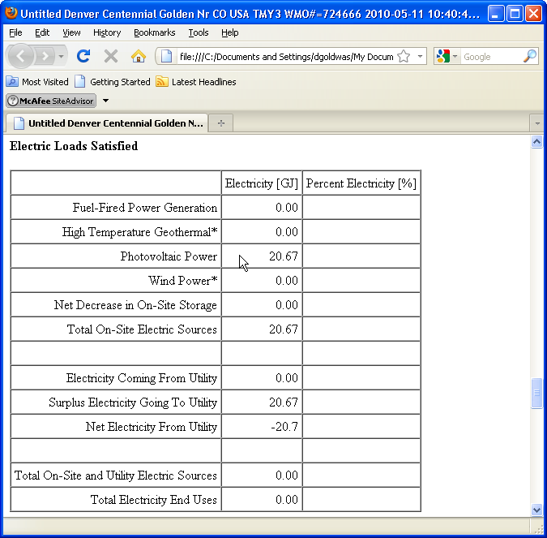

|
|
IDF 201 - Adding new IDF objects
Add additional output reports
- There are hundreds of EnergyPlus output options. They
all serve a purpose depending upon what information you
are looking for from your simulation. OpenStudio makes a few of the
most
common report types directly accessible from within the "Run
Simulation" dialog, under the results tab shown below.
- OpenStudio adds IDF objects to your building model
right before it runs depending on which boxes you have checked, it does
not save these objects to your working IDF file. However, you can add
these output requests using a text or IDF editor in which case you do
not need to use OpenStudio to request output. You can see the file
which OpenStudio runs by looking at the "in.idf" file in your run
directory.

(Credit: David Goldwasser/NREL)
- The Annual Building Utility Performance Summary is a
predefined annual summary report. Another predefined annual summary
report is the Input Verification and Results Summary. This provides a
number of different results, including a breakdown of the window to
wall ratio for all walls in the project, broken down by the direction
the
walls are facing. The text below is all that has to be added to your
IDF file to request this report.
- Output:Table:SummaryReports,
InputVerificationandResultsSummary, !-
Report Name
- Below you can see some of the results from the Input
Verification report which are contained in the EnergyPlus ".html" file
output that is created in the same directory as your IDF file.

(Credit: David Goldwasser/NREL)
- You may add additional reports
under the "Output:Table:SummaryReports" object. The Envelope
Summary lists walls and details their construction, reflectance,
U-Factor along with a number of other results. Shading Summary
will detail for every window what fraction of the window is in shade at
nine different times of the year (9am, noon, and 3pm on the solstices
and
equinoxes). See the Energy+.idd listing for
"Output:Table:SummaryReports"
to see a complete list of predefined output tables.
- Output:Table:SummaryReports,
InputVerificationandResultsSummary, !- Report
Name
EnvelopeSummary, !- Report Name
ShadingSummary; !- Report Name
- Below you can see some of the results from the
Envelope Summary report, also in the "html" file contained in the same
directory as your IDF file.

(Credit: David Goldwasser/NREL)
Back to Top
Add a photovoltaic generator (Generator:Photovoltaic)
object
- Adding the output reports was pretty easily. You add
a few lines of text and you are done. Adding something like a
photovoltaic generator involves a little more work. There are a few
objects that have to work in conjunction with each other, and with
objects you may already have in your model.
- Below is a screenshot of the model that will
be used for this demonstration. SketchUp labels have been added to
identify the surface and generator names where PV will be added. This
isn't saved
with the IDF, but was just added for this demonstration.

(Credit: David Goldwasser/NREL)
- When you want to add a more complex object like this
into your model there is often a relevant
sample file that has all the parts you need. You can copy and alter the
objects as needed. In this case the sample file you can refer to is in
the EnergyPlus example files folder and named "GeneratorswithPV.idf".
The further
simplified IDF used in this tutorial is included in the OpenStudio
install under
"OpenStudio/examples/PV objects and sample
model/Sample_PV_object_in_model.idf".
- There are a number of objects to add in order
to make the photovoltaic system properly function. First are a series
of "ElectricLoadCenter" related objects.
- ElectricLoadCenter:Distribution,
Simple Electric Load Center, !- Name
PV
list,
!-
Generator
List
Name
Baseload,
!-
Generator
Operation
Scheme
Type
0,
!-
Demand
Limit
Scheme
Purchased
Electric
Demand
Limit {W}
,
!-
Track
Schedule
Name
Scheme
Schedule
Name
,
!-
Track
Meter
Scheme
Meter
Name
DirectCurrentWithInverter, !- Electrical Buss
Type
Simple Ideal Inverter; !- Inverter
Object Name
ElectricLoadCenter:Inverter:Simple,
Simple Ideal Inverter, !- Name
always
On,
!-
Availability
Schedule
Name
,
!-
Zone
Name
0.0,
!-
Radiative
Fraction
1.0;
!-
Inverter
Efficiency
ElectricLoadCenter:Generators,
PV
list,
!-
Name
SIMPLE PV ShadingSurface,!- Generator 1 Name
Generator:Photovoltaic, !- Generator 1 Object
Type
20000,
!-
Generator
1
Rated
Electric
Power
Output
always
On,
!-
Generator
1
Availability
Schedule
Name
,
!-
Generator
1
Rated
Thermal
to
Electrical
Power Ratio
SIMPLE Integrated PV, !- Generator
2 Name
Generator:Photovoltaic, !- Generator 2 Object
Type
20000,
!-
Generator
2
Rated
Electric
Power
Output
always
On,
!-
Generator
2
Availability
Schedule
Name
,
!-
Generator
2
Rated
Thermal
to
Electrical
Power Ratio
SIMPLE Roof Paver PV, !- Generator
3 Name
Generator:Photovoltaic, !- Generator 3 Object
Type
20000,
!-
Generator
3
Rated
Electric
Power
Output
always
On,
!-
Generator
3
Availability
Schedule
Name
;
!-
Generator
3
Rated
Thermal
to
Electrical
Power Ratio
- The "PhotovoltaicPerformance:Simple" object describes
both the efficiency of our panels, as well as what percentage of our
surface is covered with PV. For this demonstration
all three generators use the same "PhotovoltaicPerformance:Simple"
object; but
each generator could also have its own "PhotovoltaicPerformance:Simple"
object.
- PhotovoltaicPerformance:Simple,
12percentEffPVhalfArea, !- Name
0.5,
!-
Fraction
of
Surface
Area
with
Active
Solar Cells {dimensionless}
Fixed,
!-
Conversion
Efficiency
Input
Mode
0.12;
!-
Value
for
Cell
Efficiency
if
Fixed
- Next we have the "Generator:Photovoltaic" objects.
Notice how the names below match up with the names for the
"ElectricLoadCenter:Generators" above. The Generators below also refer
to
the "PhotovoltaicPerformance:Simple" object by name, and lastly, they
refer to
already existing surfaces in the model by name ("external shade",
"spandrel panel", and "roof").
- Generator:Photovoltaic,
SIMPLE PV
ShadingSurface,
!- Name
external
shade,
!-
Surface
Name
**
change
to
match
your surface
PhotovoltaicPerformance:Simple, !-
Photovoltaic Performance Object Type
12percentEffPVhalfArea, !- Module Performance
Name
Decoupled,
!-
Heat
Transfer
Integration
Mode
1.0,
!-
Number
of
Modules
in
Parallel
{dimensionless}
1.0;
!-
Number
of
Modules
in
Series
{dimensionless}
Generator:Photovoltaic,
SIMPLE Integrated PV, !- Name
spandrel
panel, !- Surface
Name ** change to match your surface
PhotovoltaicPerformance:Simple, !-
Photovoltaic Performance Object Type
12percentEffPVhalfArea, !- Module Performance
Name
IntegratedSurfaceOutsideFace, !- Heat Transfer
Integration Mode
1.0,
!-
Number
of
Modules
in
Parallel
{dimensionless}
1.0;
!-
Number
of
Modules
in
Series
{dimensionless}
Generator:Photovoltaic,
SIMPLE Roof Paver PV, !- Name
roof,
!-
Surface
Name
**
change
to
match
your surface
PhotovoltaicPerformance:Simple, !-
Photovoltaic Performance Object Type
12percentEffPVhalfArea, !- Module Performance
Name
IntegratedExteriorVentedCavity, !- Heat
Transfer Integration Mode
1.0,
!-
Number
of
Modules
in
Parallel
{dimensionless}
1.0;
!-
Number
of
Modules
in
Series
{dimensionless}
- The shading surface PV is thermally decoupled from
the building. As the surface heats up, it doesn't transfer heat into a
thermal
zone of the building. Since this object only
provides shade and isn't part of a thermal zone, it doesn't have a
construction. Below is the relevant IDF text for the object.
- Shading:Building:Detailed,
external shade, !- Name
, !- Transmittance Schedule Name
4, !- Number of Vertices
0.000000, !- Vertex 1 X-coordinate {m}
-1.371600, !- Vertex 1 Y-coordinate {m}
3.048000, !- Vertex 1 Z-coordinate {m}
<cut short>
- The spandrel panel is attached to the building, and
as the PV panel heats up, it transfer some of that heat into the
thermal zone just like most other external surfaces. You can see above
that generator for this has its heat transfer integration mode set
to "IntegratedSurfaceOutsideFace". The material and construction
for this is pretty typical to a normal exterior wall.
- BuildingSurface:Detailed,
spandrel panel, !- Name
Wall, !- Surface Type
PVSpandrlPanel, !- Construction Name
PV Test Building, !- Zone Name
Outdoors, !- Outside Boundary Condition
, !- Outside Boundary Condition Object
SunExposed, !- Sun Exposure
WindExposed, !- Wind Exposure
, !- View Factor to Ground
4, !- Number of Vertices
0.000000, !- Vertex 1 X-coordinate {m}
0.000000, !- Vertex 1 Y-coordinate {m}
1.524000, !- Vertex 1 Z-coordinate {m}
<cut short>
- Construction,
PVSpandrlPanel,
!- Name
PVModule(glass), !-
Outside Layer
PVModule(glass), !-
Layer 2
B4 - 3 IN INSULATION, !- Layer 3
E6 - 1 / 2 IN GYP SHEATHING BOARD; !- Layer 4
- The roof has the panel attached in a method that
simulates an air cavity between the panel and the roof. Its heat
transfer mode is set to "IntegratedExteriorVentedCavity". To accomplish
this some objects have
to be added that simulate the air cavity. These in turn are referenced
in
the surface object.
- BuildingSurface:Detailed,
roof, !- Name
Roof, !- Surface Type
PVRoofPaverUnderlayment, !- Construction Name
PV Test Building, !- Zone Name
OtherSideConditionsModel, !- Outside Boundary
Condition
PVRoofPaverSystem1, !- Outside Boundary
Condition Object
SunExposed, !- Sun Exposure
WindExposed, !- Wind Exposure
0.0, !- View Factor to Ground
4, !- Number of Vertices
0.000000, !- Vertex 1 X-coordinate {m}
6.096000, !- Vertex 1 Y-coordinate {m}
5.791200, !- Vertex 1 Z-coordinate {m}
<cut short>
- Construction,
PVRoofPaverUnderlayment, !- Name
IN35,
!-
Outside
Layer
ROOFING - BUILT UP ROOFING - 3 / 8 IN, !-
Layer 2
INS-Roof-R_15,
!-
Layer
3
MAT-METAL;
!-
Layer
4
SurfaceProperty:OtherSideConditionsModel,
PVRoofPaverSystem1, !-
Name
GapConvectionRadiation; !- Type of Modeling
SurfaceProperty:ExteriorNaturalVentedCavity,
PVRoofPaverExtVentCav1, !- Name
PVRoofPaverSystem1, !-
Boundary Conditions Model Name
0.02,
!-
Area
Fraction
of
Openings
{dimensionless}
0.9,
!-
Thermal
Emissivity
of
Exterior
Baffle
Material
{dimensionless}
0.92,
!-
Solar
Absorbtivity
of
Exterior
Baffle
{dimensionless}
0.05,
!-
Height
Scale
for
Buoyancy-Driven
Ventilation
0.05,
!-
Effective
Thickness
of
Cavity
Behind
Exterior
Baffle {m}
0.97,
!-
Ratio
of
Actual
Surface
Area
to
Projected Surface Area
{dimensionless}
Smooth,
!-
Roughness
of
Exterior
Surface
0.1,
!-
Effectiveness
for
Perforations
with
Respect
to
Wind {dimensionless}
0.5,
!-
Discharge
Coefficient
for
Openings
with
Respect
to Buoyancy
Driven
Flow
{dimensionless}
roof;
!-
**
change
surface
name
when
using
IntegratedExteriorVentedCavity
Heat
Transfer
Mode
- In the end you have a chain of connected objects
referencing each other that looks something like this:
ElectricLoadCenter > Generator > PhotovoltaicPerformance &
Surface > Construction > Material
- While it looks very complicated you can really just
copy and paste everything in the OpenStudio sample file that falls
below the line that says " !- =========== IMPORTED PV
OBJECTS ===========". After you paste this you just need to update the
Generator objects to point to the desired surface, and then adjust the
construction of that surface as necessary to properly simulate how it
will be built.
- Lastly to view simulation results for the
photovoltaic system we need to request those results. You don't have
to request all everything shown below. Just request what you want.
- Output:Variable,*,PV Generator DC
Power,hourly;
Output:Variable,*,PV Generator DC Energy,hourly;
Output:Variable,*,Inverter AC Energy Output,hourly;
Output:Variable,*,Inverter AC Power Output,hourly;
Output:Variable,*,PV Array Efficiency,hourly;
Output:Variable,*,PV Cell Temperature,hourly;
Output:Meter,Photovoltaic:ElectricityProduced,runperiod;
Output:Meter:MeterFileOnly,Photovoltaic:ElectricityProduced,monthly;
- Below you can see the results of the
simulation. This model doesn't have any internal loads or HVAC systems
so it isn't using any energy; it only generates energy.

(Credit: David Goldwasser/NREL)
- The next tutorial will demonstrate how to batch run
variations of a model. A valuable use for this would be to study the
affect
of changing the angle of the panels on the amount of electricity
generated.
|
|
|